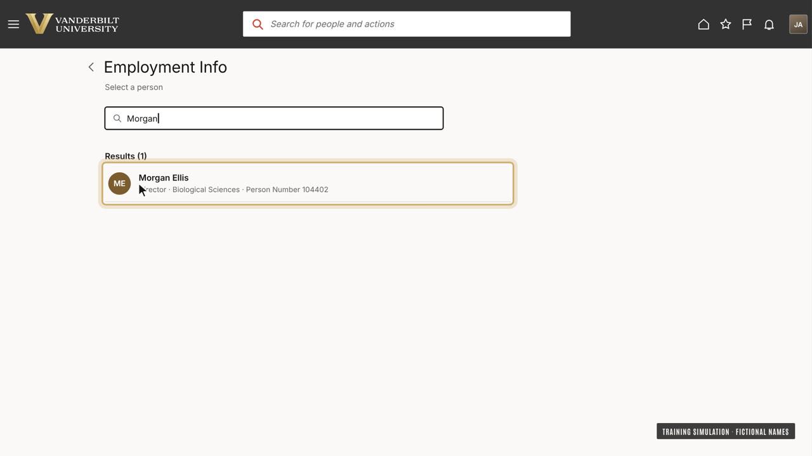
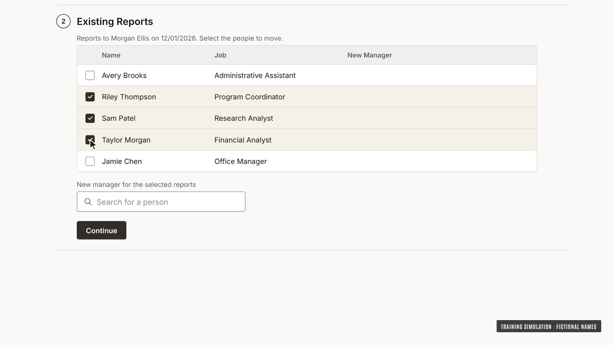
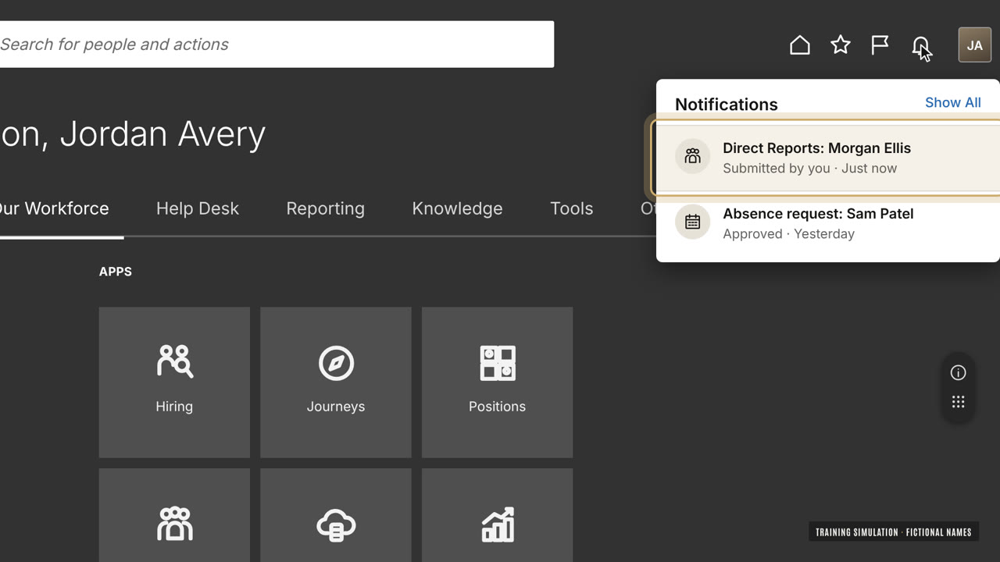
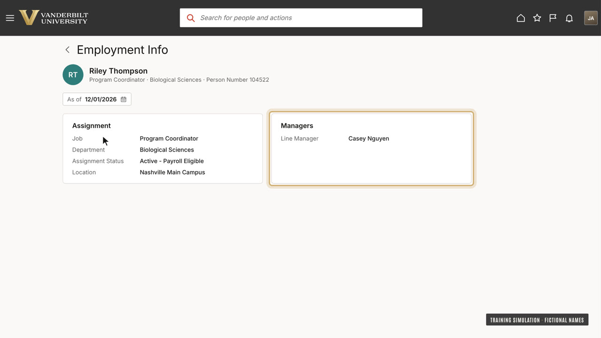

V.02 draftBuilt from Oracle documentation and official sources. Not yet reviewed by a Vanderbilt SME; confirm the open items before release.
Screen checkConfirm in Vanderbilt's Oracle or UKG during a recorded demo: the Direct Reports quick action (Our Workforce > Show More > Employment) is available to HCMs, not only super users; Whether a new manager needs a manager role or UKG approver setup, and who requests it; Whether Vanderbilt's Redwood Direct Reports page is enabled (profile ORA_PER_EMPL_MNG_DIR_REDWOOD_ENABLED).
1 · Intro
When to use it.
Watch first, then read the details below. Narrated, with the steps captioned on screen. A training simulation with fictional names, built from standard Oracle screens; Vanderbilt's screens may differ slightly.
The Direct Reports action moves a manager's team to a different manager in one transaction. You work from the manager's record, not each employee's.
Do it before a manager leaves or changes jobs, so approvals and time card sign off keep going to someone who is still there.
Use this whenA manager is leaving, moving, or handing off their team, and their direct reports need a new manager.
2 · Walk through
Step by step.
Follow along in Oracle HCM. Check off each step as you go.
Watch-outs
Do this before you terminate the manager. Reports left on a terminated manager leave approvals with no one to act on them.
Oracle moves at most 50 reports at a time on these pages. Split larger teams into batches.
Open item: confirm whether a new manager needs a manager role or UKG approver setup at Vanderbilt; Oracle notes the Direct Reports task does not grant manager roles.
Official documentation
Vendor documentation describes the standard process. Vanderbilt's setup, codes, and rules in this course take priority.
Use when: A manager is leaving, moving, or handing off their team, and their direct reports need a new manager. · System: Oracle HCM
Decide: one employee or a whole team?
One person: Change Manager
A manager's team: Direct Reports
Open Direct Reports from Our Workforce.
Set the effective date.
Select the reports to move and the new manager for each.
Review, submit, and confirm.
Watch-outs
Do this before you terminate the manager. Reports left on a terminated manager leave approvals with no one to act on them.
Oracle moves at most 50 reports at a time on these pages. Split larger teams into batches.
Open item: confirm whether a new manager needs a manager role or UKG approver setup at Vanderbilt; Oracle notes the Direct Reports task does not grant manager roles.
V.02 draft, updated Nov 17, 2026. Owner: HRIS. Sources: Oracle: How You Reassign Direct Reports; Oracle: What's the difference between the Change Manager and Direct Reports functionality?; Oracle: Redwood Experience for Direct Reports Process (24A).Questions: pcb@vanderbilt.edu
HCM Academy detailed job aid · Assignment Changes
Moving a team with Direct Reports
Step by step with screenshots. Screens from the HCM Academy training simulation of Oracle HCM. Names are fictional; check labels against Vanderbilt's Oracle.
01Open the Our Workforce tab.
On the Oracle Home page, select the Our Workforce tab.
02Select Show More.
Under Quick Actions, select Show More.
03Select Direct Reports.
Under Employment, select Direct Reports.

04Find the current manager.
Search for the manager whose reports are moving, by name or person number, and select them.
05Set the effective date.
Enter the date the new manager takes over. If the current manager is leaving, use a date on or before their last day. Oracle lets you use one date for everyone or a different date per report. Select Continue.
06Select the reports to move.
Existing Reports lists who reports to the manager on that date. Select the people who are moving.

07Assign the new manager.
Search for the new manager and select them. You can send everyone to one manager or split them. Select Continue.
08Review and submit.
Check both sections, then select Submit.
09Track the approval.
Follow the request with the notifications bell.

10Confirm the move.
Open a few of the moved employees in Employment Info and check their manager on the effective date.

V.02 draft, updated Nov 17, 2026.Questions: pcb@vanderbilt.edu
Course record
Owner and changes.
Owner
HRISRecruiting and hiring, assignment changes, offboarding, leave, records and reporting, and the HCM foundations.
Version
V.02 draftUpdated Nov 17, 2026
Review
Built from Oracle documentation and official sources. Not yet reviewed by a Vanderbilt SME; confirm the open items before release.
What changed
Nov 17, 2026Steps now follow Vanderbilt's Our Workforce screens: open Direct Reports from Show More, then search for the manager. Added a narrated video and a detailed job aid with a picture for each step.
Nov 13, 2026Owner is now HRIS. It had no owner yet.